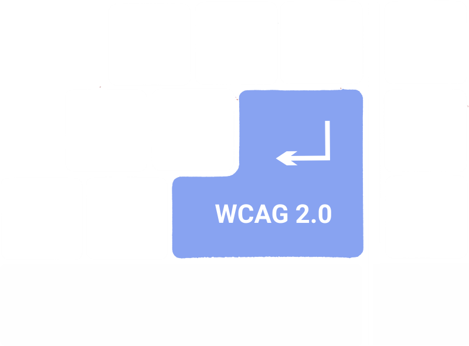
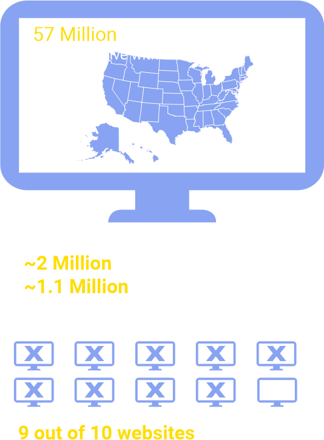
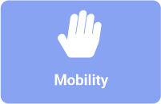

Web Accessibility
An Interactive Infographic
Press Down Key to continue
Or Mouse Scroll Down if you prefer.
Contents
Definition
Websites as well as web tools need to be properly coded and designed so that people, including those with disabilities could use them. Nevertheless, currently there are many sites which were developed with certain accessibility barriers, which make them difficult or impossible to use.
Did you know?
Vision: Text
As more content and services are becoming avialable online, reading increasingly occurs
on
screens and in web browsers. Improving text readability on the Web is one of simplest at the
same
time effective ways to improve ease of access to information.
Using too small font sizes is one of the most frequent mistakes made in present-day website
design. One solution could be alowing users adjusting the font size to their individual needs.
Also, as
resent research shows, comprehension of the text can impaired by smaller font sizes.
Click on the icons below to test font size increasing/decreasing:

Fonts and Readability
Source: Luz Rello et al, The Effect of Font Size and Line Spacing on Online Readability
Vision: Color
Normal color vision uses all three types of light cones correctly and is known as trichromacy. People with "faulty" trichromatic vision will be color blind to some extent. The different anomalous conditions are protanomaly, which is a reduced sensitivity to red light, deuteranomaly which is a reduced sensitivity to green light and is the most common form of colour blindness and tritanomaly which is a reduced sensitivity to blue light.
To make reading/seeing experience pleasant, accessibility tools as tooltips and color manipulations are used.
Hover over the image to see tooltip description.
To change color of the contenr click on buttons below:

Men vs Women
1/12 or 8% of men are color blind (blue/white colors). Women represent only 0.8% (yellow/white colors).
Source: ColorBlindAwareness.Org
Hearing
From breaking news videos to audiobooks, multimedia content is increasingly becoming important for the people. According to estimates by Cisco by 2021, almost 80% of the world’s internet traffic will be video. In this context it becomes evident why addressing hearing related accessibility is very important.
Currently there are different ways to make web accessible while watching videos. Two common methods are providing subtitles and captions.
Click on the button below to see captions for the video:
Making Videos Accessible
Speech
People with problems in speech struggle with web accessibility, especially when services include speech interaction. When a website only offers a phone number or voice interaction method as its contact information, those with speech disabilities are unable to fully interact with the website. To overcome this problem it is usually a good practice to include accessibility tools such as text-to-speech.
Please, click on button below to activate text-to-speech feature:
Turning Text to Speech
Mobility
Physical limitations can also lead to web inaccessibility. Websites without full keyboard or mouse support, ones that require time limits to complete tasks and others that require certain orientation cues can cause issues for those with physical disabilities. In such a situation a good accessibility practice could be enabling speech commands on the website, which allows to navigate and perform certain commands.
Please, click on the button below to activate voice commands feature:
Voice Controlled Web
Simple javascript libraries like annyang can help in making web content more interactive and user friendly. It is especially true about voice control.
To see how it works, after activiting voice commands feature, please say the following:
"Background Color________"(any color)
"Font big" or "Font small"
"Show image" and "Hide image"
History of Web Accessibility
Protection for people with disabilities began when the first federal civil rights protection – the Rehabilitation Act. Section 504 of the Act prohibits descrimination on the basis of disability under any program or activity receiving federal financial assistance.
Technology-Related Assistance Act for Individuals with Disabilities becomes law in the United States, authorizing federal funding to state projects designed to facilitate access to assistive technology.
Americans with Disabilities Act was adopted, the most comprehensive civil rights protection for people with disabilities.
With the advent of electronic forms and other internet technologies, the Rehabilitation Act was amended, especially section 508, to require federal agencies to make their electronic and information technology accessible to people with disabilities in a way that is comparable to the access available to others.
In 1999, the World Wide Web Consortium’s (W3C) developed WCAG (Web Content Accessibility Guidelines) 1.0 to provide a single shared standard for web content accessibility. It included 14 guidelines, ranging from the need to provide text equivalents to considering clarity and simplicity on the web. Each guideline had between one and 10 supporting checkpoints.
WCAG 2.0 broadens scope and offers the four principles. it introduced the four guiding principles of accessibility, stating content must be perceivable, operable, understandable, and robust, supported by success criteria for meeting those principles. WCAG 2.0 reigned as the gold standard for a long time.
WCAG 2.1 builds on but does not replace WCAG 2.0. It came as a a result of advancements in technology and web use. The new WCAG 2.1 standards include several success criteria for improving web accessibility on mobile devices, as well as for people with low vision and cognitive disabilities.